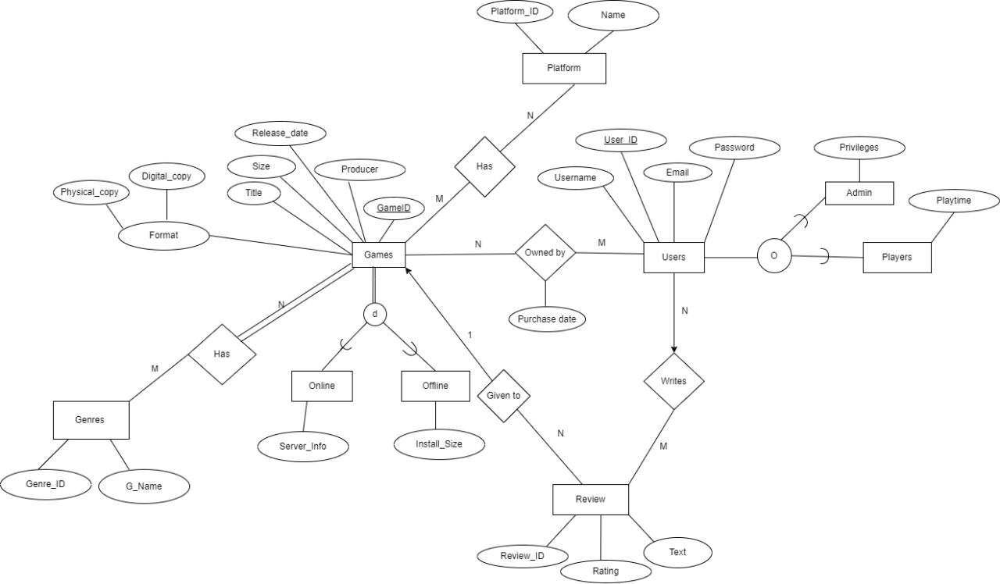
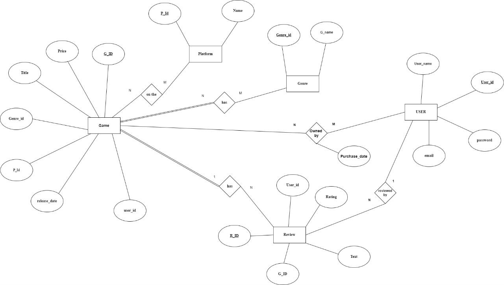

Projects
Game Collection Systems
Overview: Designed a database in MySQL to manage game collections and purchases. Learned ER/UML diagrams, relational database principles, and entity relationships.


Goal: Learn MySQL database design for organizing game data.
Key Skills: ER/UML diagrams, MySQL schema design, relational database principles.
Technologies: MySQL, Draw.io
Outcome: Created a structured database for game management, gaining practical experience.
Online Phone Store
Overview: A Java desktop application for an online phone store, integrating MySQL database via XAMPP. Focused on GUI development, event handling, and database connectivity.

Key Skills: Java GUI (Swing/AWT), MySQL/XAMPP, JDBC connectivity.
Outcome: Built a functional phone store application, showcasing Java and database skills.